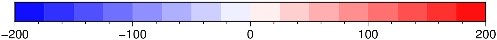
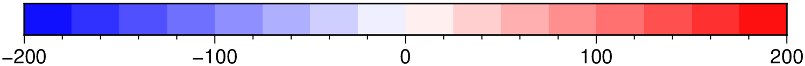
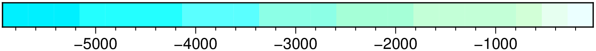
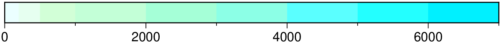
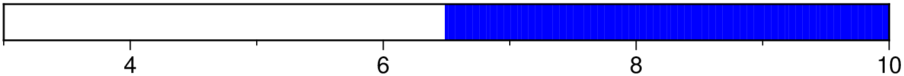
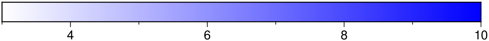
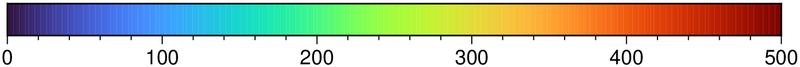
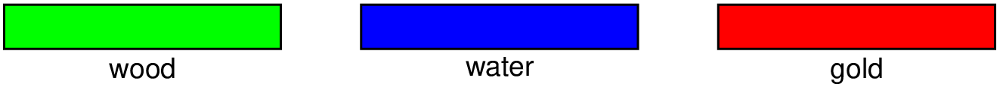

using GMT
C = makecpt(cmap=:polar, range=(-200,200,25))
imshow(C, horizontal=true)
makecpt(cmd0::String="", arg1=nothing; kwargs...)or
makecpt(name::Symbol; kwargs...)or
makecpt(G::GMTgrid; kwargs...)Make static color palette tables (CPTs) from master CPTs.
Make static color palette tables (CPTs). You define an equidistant set of contour intervals or pass your own z-table or list, and create a new CPT based on an existing master (dynamic) CPT. The resulting CPT can be reversed relative to the master cpt, and can be made continuous or discrete.
The CPT includes three additional colors beyond the range of z-values. These are the background color (B) assigned to values lower than the lowest z-value, the foreground color (F) assigned to values higher than the highest z-value, and the NaN color (N) painted wherever values are undefined.
If the master CPT includes B, F, and N entries, these will be copied into the new master file. If not, the parameters COLOR_BACKGROUND, COLOR_FOREGROUND, and COLOR_NAN from the gmt.conf file or the command line will be used. This default behavior can be overruled using the options bg, overrule_bg or no_bg.
The color model (RGB, HSV or CMYK) of the palette created by makecpt will be the same as specified in the header of the master CPT. When there is no COLOR_MODEL entry in the master CPT, the COLOR_MODEL specified in the gmt.conf file or on the command line will be used.
The second form is a quick way of generating CPT objects for use in the imshow/viz functions. Here name (as a symbol) is the name of any of the GM default palettes. It can also be the name of CPT file living in current directory. With it, you don’t specify the color=cptname as it is already implied by the fact that first argin is a symbol. As mentioned, its primary usage is to quickly show a CPT with the imshow command. e.g imshow(:gray)
The third form created the colormap from z_min, z_max limits of the grid G. The options for this form are the same as for the other two, plus the equalize option that actually call grd2cpt and call a histgram equalized cmap.
A or alpha or transparency : – alpha=xx | alpha=“xx+a”
Sets a constant level of transparency (0-100) for all color slices. Append +a to also affect the fore-, back-, and nan-colors
C or color or cmap or colormap or colorscale : – cmap=[[section/]master_cpt[+h[hinge]][+u|+Uunit]|local_cpt|color1,color2[,color3,…]]
Name of an input CPT file. Generally, the input is one of the GMT master_cpt files (see Of Colors and Color Legends) and can be either addressed by master_cpt or section/master_cpt (without the .cpt extension). If given a master CPT with soft-hinges then you can enable the hinge at data value hinge via +h, whereas for hard-hinge CPTs you can adjust the location of the hinge. For any other master_cpt, you may convert their z-values from meter to another distance unit (append +Uunit) or from another unit to meter (append +uunit), with unit taken from e|f|k|M|n|u. One can also supply the file name of already custom made local_cpt file. Alternatively, give color1,color2[,color3,…] to build a linear continuous CPT from those colors automatically, where z starts at 0 and is incremented by one for each color. In this case colorn can be a r/g/b triplet, a color name, or an HTML hexadecimal color (e.g. #aabbcc). See also [Setting color](../common_features/color.html)
D or bg or background : – bg=true | bg=:i
Select the back- and foreground colors to match the colors for lowest and highest z-values in the output CPT [Default uses the colors specified in the master file, or those defined by the parameters COLOR_BACKGROUND, COLOR_FOREGROUND, and COLOR_NAN]. Append i to match the colors for the lowest and highest values in the input (instead of the output) CPT.
E or nlevels : – nlevels=true | nlevels=nlevels
Implies reading data table(s) (from an array or file). We use the last data column to determine the data range; use incol to select another column, and use binary_in if your data table is native binary. This z-range information is used instead of providing the range option. We create a linear color table by dividing the table data z-range into nlevels equidistant slices. If nlevels is not given it defaults to the number of levels in the chosen CPT.
equalize – equalize=true | equalize=nlevels
Create an histgram equalized CPT. If nlevels is not given it defaults to the number guessed by grd2cpt. Note that when using this option and, by consequence, the form that takes a grid as input, the other options are those of the grd2cpt function.
F or color_model : – color_model=true|:r|:h|:c[“+c”[label]] | color_model=“+kkeys”
Force output CPT to be written with r/g/b codes, gray-scale values or color name (the default) or r/g/b codes only (r), or h-s-v codes (h), or c/m/y/k codes (c). Optionally or alternatively, append +c to write discrete palettes in categorical format. If label is appended then we create labels for each category to be used when the CPT is plotted. The label may be a comma-separated list of category names (you can skip a category by not giving a name), or give start[-], where we automatically build monotonically increasing labels from start (a single letter or an integer). Append - to build ranges start-start+1 instead. If the categorical CPT should have string keys instead of numerical entries then use color_model=“+kkeys”, where keys is either a file with one key per record or a single letter (e.g., D), then we build sequential letter keys (e.g., D, E, F, …) starting at that point. For comma-separated lists of keys, use range instead. Note: If +cM is given and the number of categories is 12, then we automatically create a list of month names. Likewise, if +cD is given and the number of categories is 7 then we make a list of weekday names. The format of these labels will depend on the FORMAT_TIME_PRIMARY_MAP, GMT_LANGUAGE and possibly TIME_WEEK_START settings.
G or truncate : – truncate=(zlo,zhi)
Truncate the incoming CPT so that the lowest and highest z-levels are to zlo and zhi. If one of these equal NaN then we leave that end of the CPT alone. The truncation takes place before any resampling. See also Manipulating CPTs
I or inverse or reverse : – inverse=true | inverse=:z
Reverse the sense of color progression in the master CPT. Also exchanges the foreground and background colors, including those specified by the parameters COLOR_BACKGROUND and COLOR_FOREGROUND. Use inverse=:z to reverse the sign of z-values in the color table. Note that this change of z-direction happens before truncate and range values are used so the latter much be compatible with the changed z-range. See also Manipulating CPTs
M or overrule_bg : – overrule_bg=true
Overrule background, foreground, and NaN colors specified in the master CPT with the values of the parameters COLOR_BACKGROUND, COLOR_FOREGROUND, and COLOR_NAN specified in the gmt.conf file or on the command line. When combined with bg, only COLOR_NAN is considered.
N or no_bg or nobg : – no_bg=true
Make all the background, foreground, and NaN-color fields be white (since we can’t remove them like in plain GMT).
Q or log : – log=true
For logarithmic interpolation scheme with input given as logarithms. Expects input z-values provided via range to be log10(z), assigns colors, and writes out z.
S or auto : – auto=str
Determine a suitable range for the range option from the input table. Choose from several types of range determinations: auto=:r will use the data range min/max, auto=inc[“+d”] will use the data min/max but rounded to nearest inc (append “+d” to resample to a discrete CPT), auto=“ascl” will make a symmetric range around the average (i.e., mean) and ±scl * sigma, auto=“mscl” will make a symmetric range around the median and ±scl * L1_scale, auto=“pscl” will make symmetric range around mode (i.e., LMS; least median of squares) and ±scl * LMS_scale, while auto=“qlow/high” sets the range from low quartile to high quartile (in percentages). We use the last data column for this calculation; use input_col if you need to adjust the column orders.
T or range : – range=(min,max,inc[,:number,:log2,:log10]) | range=[list] | range=file
Defines the range of the new CPT by giving the lowest and highest z-value (and optionally an interval). If range is not given, the existing range in the master CPT will be used intact. The values produces defines the color slice boundaries. If :number is added as a fourth element then inc is meant to indicate the number of equidistant coordinates instead. Use :log2 if we should take log2 of min and max, get their nearest integers, build an equidistant log2-array using inc integer increments in log2, then undo the log2 conversion. Same for :log10. For details on array creation, see Generate 1D Array.
A quick, in the sense of more limited, replacement for this option, however, is to provide the start, stop and optionally the increment via input positional arguments. E.g. for example makecpt(1,5,0.1, kw...) or even makecpt(1,5, kw...).
V or verbose : – verbose=true | verbose=level
Select verbosity level. More at [verbose](../common_opts/opt_V.html)
W or wrap or categorical : – wrap=true | wrap=:w
Do not interpolate the input color table but pick the output colors starting at the beginning of the color table, until colors for all intervals are assigned. This is particularly useful in combination with a categorical color table, like “categorical”. Alternatively, use wrap=:w to produce a wrapped (cyclic) color table that endlessly repeats its range.
Z or continuous : – continuous=true
Force a continuous CPT when building from a list of colors and a list of z-values [discrete].
name or save : – save=“name.cpt”
Save the color map with the save=“name.cpt”. When in modern mode this also automatically sets a required GMT option (-H).
The PostScript language originally had no accommodation for transparency. However, Adobe added an extension that allows developers to encode some forms of transparency using the PostScript language model but it is only realized when converting the PostScript to PDF (and via PDF to any raster image format). GMT uses this model but there are some limitations: Transparency can only be controlled on a per-object or per-layer basis. This means that a color specifications (such as those in CPTs of given via command-line options) only apply to vector graphic items (i.e., text, lines, polygon fills) or to an entire layer (which could include items such as PostScript images). This limitation rules out any mechanism of controlling transparency in such images on a pixel level.
Some of the GMT master dynamic CPTs are actually two separate CPTs meeting at a hinge. Usually, colors may change dramatically across the hinge, which is used to separate two different domains (e.g., land and ocean across the shoreline, for instance). CPTs with a hinge will have their two parts stretched to the required range separately, i.e., the bottom part up to the hinge will be stretched independently of the part from the hinge to the top, according to the prescribed new range. Hinges are either hard or soft. Soft hinges must be activated by appending hinge=val to the CPT name. If the selected range does not include an activated soft or hard hinge then we only resample colors from the half of the CPT that pertains to the range. See Of Colors and Color Legends for more information.
All CPTs can be stretched, but only continuous CPTs can be sampled at new nodes (i.e., by given an increment in range). We impose this limitation to avoid aliasing the original CPT.
To make a CPT with z-values from -200 to 200, with discrete color changes every 25, and using a polar blue-white-red colortable:
using GMT
C = makecpt(cmap=:polar, range=(-200,200,25))
imshow(C, horizontal=true)
To make an equidistant CPT from z = -2 to 6 using the continuous default turbo rainbow of colors:
C = makecpt(range=(2,6))To use the GEBCO look-alike CPT with its default range for bathymetry and save the file on disk, run
makecpt(cmap=:gebco, write="my_gebco.cpt")or simply use -Cgebco directly in the application that needs the color table. To create a 24-level color table suitable for plotting the depths in the remote data table v3206_06.txt (with lon, lat, depths), run
using GMT
C = makecpt("@v3206_06.txt", cmap=:gebco, nlevels=24)
imshow(C, horizontal=true)
To use the gebco color table but reverse the z-values so it can be used for positive depth values, try
makecpt(cmap=:gebco, reverse=:z)To make a custom discrete color table for depth of seismicity, using red color for hypocenters between 0 and 100 km, green for 100-300 km, and blue for deep (300-1000 km) earthquakes, use
using GMT
imshow(makecpt(cmap=(:red,:green,:blue), range=[0,100,300,1000], no_bg=true), horizontal=true)
To make a discrete CPT from white to blue as z goes from 3 to 10, try
using GMT
imshow(makecpt(cmap="white,blue", range=(3,10)), horizontal=true)
And to get a continuous CPT, use the option continuous=true.
using GMT
imshow(makecpt(cmap="white,blue", range=(3,10), continuous=true), horizontal=true)
To make a wrapped (cyclic) CPT from the turbo table over the interval 0 to 500, i.e., the color will be wrapped every 500 z-units so that we always get a color regardless of the z value, try
using GMT
imshow(makecpt(cmap=:turbo, range=(0,500), wrap=:w), horizontal=true)
To show the turbo color table.
using GMT
imshow(:turbo, horizontal=true)
To make a categorical CPT with string keys instead of numerical lookup values, try:
using GMT
C = makecpt(cmap=:categorical, range="wood,water,gold")
imshow(C, B=:none, horizontal=true)
Since makecpt will also interpolate from any existing CPT you may have in your directory, you should not use one of the listed cpt names as an output filename; hence the my_gebco.cpt in the example. If you do create a CPT of such a name, e.g., rainbow.cpt, then makecpt will read that file first and not look for the master CPT in the shared GMT directory.
This function has multiple methods:
makecpt(cmd0::Symbol; kwargs...) - makecpt.jl:59makecpt(cmd0::String; ...) - makecpt.jl:60makecpt(cmd0::String, arg1; kwargs...) - makecpt.jl:60makecpt(cmd0::String, arg1, d::Dict) - makecpt.jl:64makecpt(G::GMTgrid; equalize, kw...) - makecpt.jl:92makecpt(; ...) - makecpt.jl:60makecpt(b, e, inc; kw...) - makecpt.jl:174makecpt(b, e; ...) - makecpt.jl:174makecpt(arg1; kw...) - makecpt.jl:173Crameri, F., (2018). Scientific colour-maps. Zenodo. http://doi.org/10.5281/zenodo.1243862
Crameri, F. (2018), Geodynamic diagnostics, scientific visualisation and StagLab 3.0, Geosci. Model Dev., 11, 2541-2562, doi:10.5194/gmd-11-2541-2018.